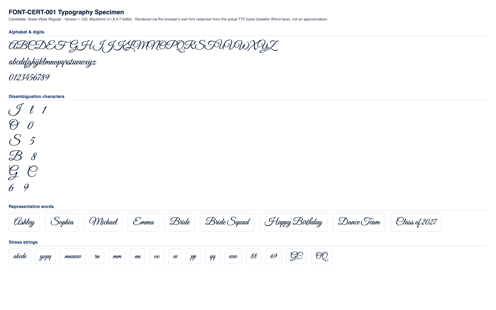

CONDITIONAL PASS
Classification and the feedback below are computed at the mid-range letter height for each stone size (the representative case). Full min/mid/max data is shown in section 4.
No blocking issues found.
Min and max height produce no more collisions or low-stone-count findings than mid height.
Medium
No blocking production failures, but 11 refinement note(s) were found (9 actionable item(s) below) -- readability, spacing, or anatomy concerns that would need addressing for production quality.
| Status | Check | Category | Detail |
|---|---|---|---|
| PASS | Successful TTF parsing | parsing | opentype.js parsed the file without error. |
| PASS | Outline format | structure | TrueType (quadratic) outlines. sfnt signature "0x00010000", opentype.js outlinesFormat="truetype". |
| PASS | Quadratic TrueType outlines | structure | TrueType file with quadratic curves confirmed: 821 curve commands found across 10 sampled glyphs. |
| PASS | unitsPerEm | structure | unitsPerEm = 1000 |
| PASS | Glyph count | structure | 2025 glyphs (font.numGlyphs=2025). |
| PASS | .notdef at glyph index 0 | structure | .notdef confirmed at glyph index 0. |
| PASS | Unicode cmap coverage | coverage | cmap maps 1081 Unicode code point(s) to glyphs. |
| PASS | Required character coverage (A-Z, a-z, 0-9, space, . , ' - ! ?) | coverage | All 69 required characters map to a real glyph (glyph index != 0). |
| PASS | Required sfnt tables | structure | All required tables present: cmap, glyf, head, hhea, hmtx, loca, maxp, name, post, OS/2. |
| PASS | Family / subfamily / version / PostScript naming | naming | family="Great Vibes", subfamily="Regular", version="Version 1.103; ttfautohint (v1.8.4.7-5d5b)", postScriptName="GreatVibes-Regular". |
| PASS | Ascender, descender, line gap, horizontal metrics | metrics | ascender=851, descender=-401, hhea.lineGap=0, advanceWidthMax=1800, numberOfHMetrics=2025 (hmtx table present: true). |
| PASS | Invalid or empty glyphs | geometry | No mapped, non-whitespace, non-invisible-by-design character resolves to an empty outline. |
| PASS | Open contours | geometry | Every required-character contour closes explicitly (an explicit "Z"/closepath command) or implicitly (its final point returns to its starting point). |
| PASS | Self-intersections | geometry | Strict transversal-crossing test (deduplicated, 16-segments-per-curve flattened outline, 69 required characters) found no self- or cross-contour crossings. |
| WARNING | Zero-length or duplicate outline segments | geometry | 68 of 69 character(s) contain 1713 raw zero-length draw command(s) total (a command whose endpoint exactly duplicates the current pen position -- draws nothing, harmless no-op, but real source-file redundancy), 0 duplicate outline segments. Not production-blocking: these commands have no visual or geometric effect. Per-character counts: "A" (zero-length:31, duplicate:0), "B" (zero-length:40, duplicate:0), "C" (zero-length:23, duplicate:0), "D" (zero-length:33, duplicate:0), "E" (zero-length:27, duplicate:0), "F" (zero-length:43, duplicate:0), "G" (zero-length:38, duplicate:0), "H" (zero-length:56, duplicate:0), +60 more. |
| PASS | Coordinates outside valid TrueType ranges | geometry | All required-character outline coordinates fall within the signed 16-bit range (-32768 to 32767). |
| PASS | Inconsistent or suspicious advance widths / side bearings | metrics | Advance widths for required characters cluster reasonably around the median (396 units). |
Rendered from the actual source TTF via a base64-embedded @font-face rule (typography), and through the real production pipeline FontManager → OpenTypeProvider → GeometryEngine.generateTextLayout() → StoneLayout (rhinestone), at this milestone's own physical letter-height range per stone size:
| Stone size | Min | Mid (representative) | Max |
|---|---|---|---|
| SS6 | 35mm | 42.5mm | 50mm |
| SS10 | 45mm | 52.5mm | 60mm |
| SS16 | 65mm | 77.5mm | 90mm |
| SS20 | 80mm | 95mm | 110mm |
| SS30 | 106mm | 108.5mm | 111mm |


Successful layout generation (a non-empty StoneLayout with no collisions) is not the same as visual readability -- see each height variant's readability metrics below for objective, threshold-based findings.
| SS6 | text height: 35mm |
|---|---|
| SS10 | text height: 45mm |
| SS16 | text height: 65mm |
| SS20 | text height: 80mm |
| SS30 | text height: 106mm |
| Pair | Size | Stone counts | Chamfer distance | Result |
|---|---|---|---|---|
| "I" vs "l" | SS16 | 54 / 23 | 0.1375 | PASS |
| "l" vs "1" | SS16 | 23 / 12 | 0.0938 | PASS |
| "I" vs "1" | SS16 | 54 / 12 | 0.1704 | PASS |
| "O" vs "0" | SS16 | 57 / 29 | 0.0801 | WARNING |
| "S" vs "5" | SS16 | 57 / 22 | 0.0956 | PASS |
| "B" vs "8" | SS16 | 81 / 28 | 0.1268 | PASS |
| "G" vs "C" | SS16 | 81 / 56 | 0.0765 | WARNING |
| "Q" vs "O" | SS16 | 74 / 57 | 0.0852 | WARNING |
| "e" vs "c" | SS16 | 17 / 16 | 0.0702 | WARNING |
| "e" vs "o" | SS16 | 17 / 19 | 0.1085 | PASS |
| "c" vs "o" | SS16 | 16 / 19 | 0.0977 | PASS |
| "6" vs "9" | SS16 | 25 / 25 | 0.0994 | PASS |
Threshold: 0.09 (normalized, unit-height point clouds). Below threshold = flagged as visually similar.
| Char | SS6 | SS10 | SS16 | SS20 | SS30 |
|---|---|---|---|---|---|
| "A" | 69 | 61 | 65 | 69 | 68 |
| "B" | 90 | 80 | 81 | 87 | 88 |
| "C" | 59 | 55 | 56 | 62 | 57 |
| "D" | 81 | 73 | 72 | 80 | 78 |
| "E" | 53 | 47 | 50 | 51 | 52 |
| "F" | 74 | 65 | 70 | 74 | 69 |
| "G" | 88 | 80 | 81 | 89 | 87 |
| "H" | 100 | 93 | 87 | 97 | 99 |
| "I" | 61 | 51 | 54 | 56 | 58 |
| "J" | 75 | 65 | 70 | 76 | 74 |
| "K" | 97 | 89 | 93 | 99 | 101 |
| "L" | 69 | 62 | 68 | 71 | 69 |
| "M" | 111 | 97 | 102 | 111 | 105 |
| "N" | 93 | 78 | 84 | 91 | 93 |
| "O" | 67 | 58 | 57 | 64 | 60 |
| "P" | 73 | 63 | 65 | 73 | 70 |
| "Q" | 77 | 68 | 74 | 77 | 78 |
| "R" | 83 | 81 | 76 | 82 | 85 |
| "S" | 58 | 52 | 57 | 59 | 60 |
| "T" | 66 | 58 | 60 | 67 | 66 |
| "U" | 69 | 59 | 61 | 67 | 69 |
| "V" | 73 | 64 | 68 | 76 | 69 |
| "W" | 100 | 86 | 93 | 102 | 99 |
| "X" | 61 | 57 | 56 | 61 | 60 |
| "Y" | 101 | 92 | 95 | 103 | 97 |
| "Z" | 64 | 55 | 59 | 65 | 63 |
| "a" | 25 | 19 | 21 | 24 | 22 |
| "b" | 28 | 25 | 26 | 30 | 29 |
| "c" | 17 | 14 | 16 | 16 | 15 |
| "d" | 39 | 28 | 30 | 36 | 32 |
| "e" | 18 | 16 | 17 | 19 | 17 |
| "f" | 32 | 31 | 28 | 32 | 32 |
| "g" | 42 | 36 | 37 | 40 | 38 |
| "h" | 35 | 28 | 33 | 31 | 35 |
| "i" | 14 | 12 | 13 | 15 | 12 |
| "j" | 32 | 29 | 27 | 31 | 29 |
| "k" | 29 | 25 | 27 | 29 | 28 |
| "l" | 27 | 23 | 23 | 23 | 23 |
| "m" | 33 | 25 | 31 | 33 | 29 |
| "n" | 27 | 21 | 20 | 26 | 24 |
| "o" | 20 | 17 | 19 | 21 | 19 |
| "p" | 30 | 24 | 24 | 30 | 28 |
| "q" | 29 | 21 | 23 | 26 | 26 |
| "r" | 20 | 16 | 16 | 20 | 15 |
| "s" | 20 | 17 | 17 | 19 | 19 |
| "t" | 18 | 14 | 15 | 15 | 15 |
| "u" | 26 | 19 | 24 | 24 | 23 |
| "v" | 20 | 17 | 18 | 18 | 18 |
| "w" | 31 | 27 | 28 | 31 | 28 |
| "x" | 21 | 17 | 20 | 18 | 19 |
| "y" | 40 | 37 | 37 | 42 | 39 |
| "z" | 21 | 16 | 19 | 20 | 18 |
| "0" | 29 | 28 | 29 | 31 | 31 |
| "1" | 14 | 12 | 12 | 13 | 14 |
| "2" | 25 | 25 | 23 | 25 | 24 |
| "3" | 23 | 21 | 23 | 24 | 22 |
| "4" | 22 | 21 | 20 | 23 | 21 |
| "5" | 25 | 21 | 22 | 24 | 23 |
| "6" | 28 | 25 | 25 | 29 | 29 |
| "7" | 20 | 17 | 19 | 20 | 19 |
| "8" | 29 | 26 | 28 | 30 | 28 |
| "9" | 28 | 24 | 25 | 26 | 25 |
Cell values are stone count per glyph at that stone size ("coll." = colliding stone pairs found).
| Word | SS6 | SS10 | SS16 | SS20 | SS30 |
|---|---|---|---|---|---|
| Ashley | 195 stones, min spacing 2.02mm, 2 cluster(s) | 171 stones, min spacing 2.81mm, 2 cluster(s) | 176 stones, min spacing 4.02mm, 4 cluster(s) | 192 stones, min spacing 4.72mm, 3 cluster(s) | 189 stones, min spacing 6.40mm, 3 cluster(s) |
| Sophia | 176 stones, min spacing 2.00mm, 2 cluster(s) | 146 stones, min spacing 2.81mm, 2 cluster(s) | 158 stones, min spacing 4.01mm, 2 cluster(s) | 169 stones, min spacing 4.72mm, 2 cluster(s) | 171 stones, min spacing 6.40mm, 1 cluster(s) |
| Michael | 233 stones, min spacing 2.03mm, 2 cluster(s) | 197 stones, min spacing 2.81mm, 2 cluster(s) | 211 stones, min spacing 4.01mm, 1 cluster(s) | 224 stones, min spacing 4.71mm, 4 cluster(s) | 216 stones, min spacing 6.40mm, 4 cluster(s) |
| Emma | 137 stones, min spacing 2.00mm, 2 cluster(s) | 113 stones, min spacing 2.81mm, 2 cluster(s) | 124 stones, min spacing 4.01mm, 1 cluster(s) | 135 stones, min spacing 4.72mm, 1 cluster(s) | 126 stones, min spacing 6.41mm, 1 cluster(s) |
| Bride | 173 stones, min spacing 2.00mm, 2 cluster(s) | 144 stones, min spacing 2.82mm, 1 cluster(s) | 147 stones, min spacing 4.01mm, 3 cluster(s) | 170 stones, min spacing 4.71mm, 3 cluster(s) | 160 stones, min spacing 6.40mm, 3 cluster(s) |
| Bride Squad | 345 stones, min spacing 2.00mm, 3 cluster(s) | 280 stones, min spacing 2.81mm, 2 cluster(s) | 298 stones, min spacing 4.01mm, 4 cluster(s) | 333 stones, min spacing 4.71mm, 4 cluster(s) | 320 stones, min spacing 6.40mm, 5 cluster(s) |
| Happy Birthday | 486 stones, min spacing 2.00mm, 3 cluster(s) | 422 stones, min spacing 2.81mm, 2 cluster(s) | 422 stones, min spacing 4.00mm, 8 cluster(s) | 480 stones, min spacing 4.70mm, 5 cluster(s) | 461 stones, min spacing 6.40mm, 4 cluster(s) |
| Dance Team | 293 stones, min spacing 2.00mm, 4 cluster(s) | 248 stones, min spacing 2.81mm, 3 cluster(s) | 258 stones, min spacing 4.01mm, 4 cluster(s) | 292 stones, min spacing 4.70mm, 6 cluster(s) | 283 stones, min spacing 6.40mm, 6 cluster(s) |
| Class of 2027 | 285 stones, min spacing 2.00mm, 8 cluster(s) | 260 stones, min spacing 2.80mm, 8 cluster(s) | 258 stones, min spacing 4.01mm, 10 cluster(s) | 287 stones, min spacing 4.72mm, 12 cluster(s) | 275 stones, min spacing 6.41mm, 9 cluster(s) |
No glyph/size combination falls below the minimum meaningful stone count.
No counter-bearing glyph/size combination falls below the counter-bearing stone-count floor.
| Pair | Size | Chamfer distance | Stone counts |
|---|---|---|---|
| "l" vs "1" | SS6 | 0.0688 | 27 / 14 |
| "O" vs "0" | SS6 | 0.0712 | 67 / 29 |
| "G" vs "C" | SS6 | 0.0729 | 88 / 59 |
| "Q" vs "O" | SS6 | 0.0758 | 77 / 67 |
| "e" vs "c" | SS6 | 0.0603 | 18 / 17 |
| "l" vs "1" | SS10 | 0.0841 | 23 / 12 |
| "O" vs "0" | SS10 | 0.0716 | 58 / 28 |
| "G" vs "C" | SS10 | 0.0761 | 80 / 55 |
| "Q" vs "O" | SS10 | 0.0784 | 68 / 58 |
| "e" vs "c" | SS10 | 0.0639 | 16 / 14 |
| "O" vs "0" | SS16 | 0.0801 | 57 / 29 |
| "G" vs "C" | SS16 | 0.0765 | 81 / 56 |
| "Q" vs "O" | SS16 | 0.0852 | 74 / 57 |
| "e" vs "c" | SS16 | 0.0702 | 17 / 16 |
| "l" vs "1" | SS20 | 0.0851 | 23 / 13 |
| "O" vs "0" | SS20 | 0.0703 | 64 / 31 |
| "G" vs "C" | SS20 | 0.0721 | 89 / 62 |
| "Q" vs "O" | SS20 | 0.0749 | 77 / 64 |
| "e" vs "c" | SS20 | 0.0514 | 19 / 16 |
| "l" vs "1" | SS30 | 0.0831 | 23 / 14 |
| "O" vs "0" | SS30 | 0.0754 | 60 / 31 |
| "G" vs "C" | SS30 | 0.0780 | 87 / 57 |
| "Q" vs "O" | SS30 | 0.0767 | 78 / 60 |
| "e" vs "c" | SS30 | 0.0596 | 17 / 15 |
| "c" vs "o" | SS30 | 0.0857 | 15 / 19 |
| Size | Diameter | Scale | Rendered stone size | Result |
|---|---|---|---|---|
| SS6 | 2mm | 5px/mm | 10px | PASS |
| SS10 | 2.8mm | 4px/mm | 11.2px | PASS |
| SS16 | 4mm | 3.5px/mm | 14px | PASS |
| SS20 | 4.7mm | 3px/mm | 14.1px | PASS |
| SS30 | 6.4mm | 2.5px/mm | 16px | PASS |
| SS6 | text height: 42.5mm |
|---|---|
| SS10 | text height: 52.5mm |
| SS16 | text height: 77.5mm |
| SS20 | text height: 95mm |
| SS30 | text height: 108.5mm |
| Pair | Size | Stone counts | Chamfer distance | Result |
|---|---|---|---|---|
| "I" vs "l" | SS16 | 72 / 34 | 0.1343 | PASS |
| "l" vs "1" | SS16 | 34 / 22 | 0.0565 | WARNING |
| "I" vs "1" | SS16 | 72 / 22 | 0.1483 | PASS |
| "O" vs "0" | SS16 | 80 / 38 | 0.0664 | WARNING |
| "S" vs "5" | SS16 | 72 / 30 | 0.0991 | PASS |
| "B" vs "8" | SS16 | 109 / 36 | 0.1293 | PASS |
| "G" vs "C" | SS16 | 104 / 71 | 0.0722 | WARNING |
| "Q" vs "O" | SS16 | 96 / 80 | 0.0733 | WARNING |
| "e" vs "c" | SS16 | 22 / 21 | 0.0467 | WARNING |
| "e" vs "o" | SS16 | 22 / 25 | 0.0809 | WARNING |
| "c" vs "o" | SS16 | 21 / 25 | 0.0825 | WARNING |
| "6" vs "9" | SS16 | 37 / 32 | 0.0913 | PASS |
Threshold: 0.09 (normalized, unit-height point clouds). Below threshold = flagged as visually similar.
| Char | SS6 | SS10 | SS16 | SS20 | SS30 |
|---|---|---|---|---|---|
| "A" | 89 | 79 | 84 | 90 | 69 |
| "B" | 123 | 102 | 109 | 115 | 92 |
| "C" | 78 | 67 | 71 | 79 | 62 |
| "D" | 108 | 92 | 99 | 105 | 82 |
| "E" | 74 | 58 | 65 | 72 | 57 |
| "F" | 102 | 84 | 90 | 100 | 73 |
| "G" | 117 | 99 | 104 | 114 | 88 |
| "H" | 134 | 116 | 124 | 132 | 106 |
| "I" | 80 | 68 | 72 | 79 | 60 |
| "J" | 101 | 88 | 95 | 100 | 77 |
| "K" | 125 | 113 | 116 | 123 | 102 |
| "L" | 98 | 80 | 87 | 94 | 72 |
| "M" | 149 | 128 | 138 | 148 | 111 |
| "N" | 123 | 106 | 117 | 126 | 94 |
| "O" | 91 | 78 | 80 | 89 | 66 |
| "P" | 99 | 88 | 92 | 101 | 71 |
| "Q" | 104 | 90 | 96 | 103 | 78 |
| "R" | 117 | 96 | 110 | 113 | 81 |
| "S" | 76 | 66 | 72 | 77 | 59 |
| "T" | 92 | 79 | 85 | 88 | 69 |
| "U" | 91 | 77 | 84 | 89 | 69 |
| "V" | 101 | 85 | 97 | 98 | 75 |
| "W" | 134 | 113 | 122 | 138 | 102 |
| "X" | 75 | 69 | 72 | 77 | 65 |
| "Y" | 136 | 120 | 125 | 136 | 104 |
| "Z" | 91 | 82 | 83 | 91 | 63 |
| "a" | 34 | 30 | 31 | 35 | 21 |
| "b" | 40 | 34 | 36 | 39 | 30 |
| "c" | 24 | 20 | 21 | 22 | 15 |
| "d" | 48 | 41 | 44 | 47 | 35 |
| "e" | 26 | 21 | 22 | 24 | 18 |
| "f" | 51 | 42 | 48 | 48 | 33 |
| "g" | 56 | 47 | 49 | 56 | 41 |
| "h" | 44 | 38 | 43 | 43 | 34 |
| "i" | 21 | 17 | 19 | 19 | 14 |
| "j" | 46 | 36 | 39 | 43 | 30 |
| "k" | 46 | 35 | 40 | 44 | 30 |
| "l" | 38 | 31 | 34 | 37 | 27 |
| "m" | 47 | 40 | 43 | 46 | 31 |
| "n" | 34 | 30 | 31 | 34 | 23 |
| "o" | 27 | 23 | 25 | 27 | 21 |
| "p" | 41 | 36 | 39 | 40 | 30 |
| "q" | 40 | 33 | 35 | 39 | 28 |
| "r" | 26 | 23 | 22 | 23 | 19 |
| "s" | 28 | 23 | 23 | 27 | 19 |
| "t" | 26 | 19 | 23 | 26 | 16 |
| "u" | 34 | 29 | 31 | 32 | 25 |
| "v" | 26 | 23 | 25 | 25 | 19 |
| "w" | 42 | 35 | 39 | 42 | 29 |
| "x" | 26 | 22 | 25 | 25 | 19 |
| "y" | 60 | 48 | 51 | 59 | 41 |
| "z" | 25 | 21 | 23 | 24 | 21 |
| "0" | 42 | 34 | 38 | 38 | 31 |
| "1" | 28 | 18 | 22 | 26 | 15 |
| "2" | 34 | 28 | 30 | 31 | 24 |
| "3" | 31 | 26 | 28 | 30 | 24 |
| "4" | 32 | 30 | 28 | 30 | 22 |
| "5" | 32 | 27 | 30 | 33 | 25 |
| "6" | 38 | 32 | 37 | 41 | 27 |
| "7" | 28 | 23 | 27 | 25 | 20 |
| "8" | 36 | 31 | 36 | 35 | 30 |
| "9" | 37 | 29 | 32 | 36 | 26 |
Cell values are stone count per glyph at that stone size ("coll." = colliding stone pairs found).
| Word | SS6 | SS10 | SS16 | SS20 | SS30 |
|---|---|---|---|---|---|
| Ashley | 265 stones, min spacing 2.01mm, 1 cluster(s) | 225 stones, min spacing 2.81mm, 2 cluster(s) | 241 stones, min spacing 4.00mm, 4 cluster(s) | 259 stones, min spacing 4.70mm, 1 cluster(s) | 193 stones, min spacing 6.41mm, 3 cluster(s) |
| Sophia | 235 stones, min spacing 2.01mm, 2 cluster(s) | 203 stones, min spacing 2.80mm, 2 cluster(s) | 219 stones, min spacing 4.00mm, 1 cluster(s) | 233 stones, min spacing 4.73mm, 1 cluster(s) | 173 stones, min spacing 6.41mm, 3 cluster(s) |
| Michael | 320 stones, min spacing 2.02mm, 2 cluster(s) | 269 stones, min spacing 2.80mm, 2 cluster(s) | 292 stones, min spacing 4.00mm, 2 cluster(s) | 310 stones, min spacing 4.72mm, 1 cluster(s) | 227 stones, min spacing 6.41mm, 5 cluster(s) |
| Emma | 193 stones, min spacing 2.01mm, 1 cluster(s) | 162 stones, min spacing 2.80mm, 2 cluster(s) | 173 stones, min spacing 4.05mm, 1 cluster(s) | 188 stones, min spacing 4.71mm, 1 cluster(s) | 135 stones, min spacing 6.44mm, 2 cluster(s) |
| Bride | 233 stones, min spacing 2.01mm, 2 cluster(s) | 197 stones, min spacing 2.80mm, 1 cluster(s) | 208 stones, min spacing 4.01mm, 3 cluster(s) | 217 stones, min spacing 4.73mm, 3 cluster(s) | 168 stones, min spacing 6.44mm, 5 cluster(s) |
| Bride Squad | 458 stones, min spacing 2.01mm, 3 cluster(s) | 391 stones, min spacing 2.80mm, 3 cluster(s) | 414 stones, min spacing 4.01mm, 4 cluster(s) | 441 stones, min spacing 4.71mm, 4 cluster(s) | 332 stones, min spacing 6.41mm, 8 cluster(s) |
| Happy Birthday | 667 stones, min spacing 2.01mm, 6 cluster(s) | 564 stones, min spacing 2.80mm, 2 cluster(s) | 603 stones, min spacing 4.00mm, 5 cluster(s) | 649 stones, min spacing 4.70mm, 4 cluster(s) | 487 stones, min spacing 6.40mm, 8 cluster(s) |
| Dance Team | 407 stones, min spacing 2.01mm, 3 cluster(s) | 345 stones, min spacing 2.80mm, 3 cluster(s) | 367 stones, min spacing 4.00mm, 3 cluster(s) | 395 stones, min spacing 4.72mm, 6 cluster(s) | 283 stones, min spacing 6.42mm, 9 cluster(s) |
| Class of 2027 | 402 stones, min spacing 2.01mm, 6 cluster(s) | 336 stones, min spacing 2.80mm, 8 cluster(s) | 364 stones, min spacing 4.03mm, 8 cluster(s) | 386 stones, min spacing 4.70mm, 10 cluster(s) | 286 stones, min spacing 6.42mm, 11 cluster(s) |
No glyph/size combination falls below the minimum meaningful stone count.
No counter-bearing glyph/size combination falls below the counter-bearing stone-count floor.
| Pair | Size | Chamfer distance | Stone counts |
|---|---|---|---|
| "l" vs "1" | SS6 | 0.0484 | 38 / 28 |
| "O" vs "0" | SS6 | 0.0648 | 91 / 42 |
| "G" vs "C" | SS6 | 0.0679 | 117 / 78 |
| "Q" vs "O" | SS6 | 0.0708 | 104 / 91 |
| "e" vs "c" | SS6 | 0.0468 | 26 / 24 |
| "e" vs "o" | SS6 | 0.0886 | 26 / 27 |
| "6" vs "9" | SS6 | 0.0862 | 38 / 37 |
| "l" vs "1" | SS10 | 0.0624 | 31 / 18 |
| "O" vs "0" | SS10 | 0.0677 | 78 / 34 |
| "G" vs "C" | SS10 | 0.0708 | 99 / 67 |
| "Q" vs "O" | SS10 | 0.0732 | 90 / 78 |
| "e" vs "c" | SS10 | 0.0449 | 21 / 20 |
| "e" vs "o" | SS10 | 0.0888 | 21 / 23 |
| "c" vs "o" | SS10 | 0.0853 | 20 / 23 |
| "l" vs "1" | SS16 | 0.0565 | 34 / 22 |
| "O" vs "0" | SS16 | 0.0664 | 80 / 38 |
| "G" vs "C" | SS16 | 0.0722 | 104 / 71 |
| "Q" vs "O" | SS16 | 0.0733 | 96 / 80 |
| "e" vs "c" | SS16 | 0.0467 | 22 / 21 |
| "e" vs "o" | SS16 | 0.0809 | 22 / 25 |
| "c" vs "o" | SS16 | 0.0825 | 21 / 25 |
| "l" vs "1" | SS20 | 0.0534 | 37 / 26 |
| "O" vs "0" | SS20 | 0.0670 | 89 / 38 |
| "G" vs "C" | SS20 | 0.0713 | 114 / 79 |
| "Q" vs "O" | SS20 | 0.0718 | 103 / 89 |
| "e" vs "c" | SS20 | 0.0641 | 24 / 22 |
| "e" vs "o" | SS20 | 0.0853 | 24 / 27 |
| "c" vs "o" | SS20 | 0.0815 | 22 / 27 |
| "6" vs "9" | SS20 | 0.0865 | 41 / 36 |
| "l" vs "1" | SS30 | 0.0693 | 27 / 15 |
| "O" vs "0" | SS30 | 0.0719 | 66 / 31 |
| "G" vs "C" | SS30 | 0.0748 | 88 / 62 |
| "Q" vs "O" | SS30 | 0.0780 | 78 / 66 |
| "e" vs "c" | SS30 | 0.0634 | 18 / 15 |
| Size | Diameter | Scale | Rendered stone size | Result |
|---|---|---|---|---|
| SS6 | 2mm | 5px/mm | 10px | PASS |
| SS10 | 2.8mm | 4px/mm | 11.2px | PASS |
| SS16 | 4mm | 3.5px/mm | 14px | PASS |
| SS20 | 4.7mm | 3px/mm | 14.1px | PASS |
| SS30 | 6.4mm | 2.5px/mm | 16px | PASS |
| SS6 | text height: 50mm |
|---|---|
| SS10 | text height: 60mm |
| SS16 | text height: 90mm |
| SS20 | text height: 110mm |
| SS30 | text height: 111mm |
| Pair | Size | Stone counts | Chamfer distance | Result |
|---|---|---|---|---|
| "I" vs "l" | SS16 | 94 / 42 | 0.1323 | PASS |
| "l" vs "1" | SS16 | 42 / 30 | 0.0479 | WARNING |
| "I" vs "1" | SS16 | 94 / 30 | 0.1379 | PASS |
| "O" vs "0" | SS16 | 104 / 50 | 0.0626 | WARNING |
| "S" vs "5" | SS16 | 88 / 35 | 0.1024 | PASS |
| "B" vs "8" | SS16 | 137 / 41 | 0.1280 | PASS |
| "G" vs "C" | SS16 | 133 / 93 | 0.0699 | WARNING |
| "Q" vs "O" | SS16 | 120 / 104 | 0.0722 | WARNING |
| "e" vs "c" | SS16 | 28 / 26 | 0.0452 | WARNING |
| "e" vs "o" | SS16 | 28 / 29 | 0.0901 | PASS |
| "c" vs "o" | SS16 | 26 / 29 | 0.0874 | WARNING |
| "6" vs "9" | SS16 | 46 / 42 | 0.0845 | WARNING |
Threshold: 0.09 (normalized, unit-height point clouds). Below threshold = flagged as visually similar.
| Char | SS6 | SS10 | SS16 | SS20 | SS30 |
|---|---|---|---|---|---|
| "A" | 107 | 92 | 100 | 107 | 72 |
| "B" | 154 | 126 | 137 | 148 | 93 |
| "C" | 103 | 83 | 93 | 98 | 65 |
| "D" | 136 | 112 | 125 | 130 | 80 |
| "E" | 95 | 79 | 85 | 91 | 55 |
| "F" | 131 | 103 | 117 | 125 | 77 |
| "G" | 150 | 121 | 133 | 141 | 93 |
| "H" | 168 | 139 | 155 | 162 | 113 |
| "I" | 103 | 86 | 94 | 101 | 60 |
| "J" | 126 | 106 | 116 | 123 | 78 |
| "K" | 164 | 135 | 148 | 161 | 99 |
| "L" | 124 | 98 | 112 | 118 | 73 |
| "M" | 183 | 153 | 170 | 181 | 114 |
| "N" | 154 | 127 | 142 | 148 | 97 |
| "O" | 113 | 96 | 104 | 110 | 67 |
| "P" | 128 | 105 | 117 | 126 | 76 |
| "Q" | 130 | 109 | 120 | 126 | 84 |
| "R" | 147 | 122 | 133 | 145 | 89 |
| "S" | 97 | 78 | 88 | 92 | 62 |
| "T" | 113 | 97 | 104 | 113 | 68 |
| "U" | 116 | 95 | 103 | 113 | 76 |
| "V" | 133 | 104 | 121 | 126 | 80 |
| "W" | 171 | 144 | 156 | 165 | 106 |
| "X" | 96 | 82 | 89 | 95 | 64 |
| "Y" | 171 | 142 | 154 | 171 | 108 |
| "Z" | 119 | 94 | 108 | 118 | 68 |
| "a" | 41 | 36 | 39 | 41 | 23 |
| "b" | 47 | 40 | 44 | 47 | 31 |
| "c" | 28 | 24 | 26 | 28 | 17 |
| "d" | 57 | 48 | 54 | 58 | 35 |
| "e" | 31 | 26 | 28 | 30 | 19 |
| "f" | 61 | 54 | 59 | 61 | 32 |
| "g" | 70 | 59 | 64 | 68 | 42 |
| "h" | 55 | 46 | 52 | 53 | 33 |
| "i" | 26 | 21 | 22 | 23 | 14 |
| "j" | 54 | 47 | 50 | 51 | 33 |
| "k" | 57 | 49 | 49 | 53 | 30 |
| "l" | 44 | 39 | 42 | 44 | 24 |
| "m" | 58 | 47 | 52 | 55 | 34 |
| "n" | 41 | 34 | 38 | 42 | 23 |
| "o" | 33 | 28 | 29 | 32 | 21 |
| "p" | 49 | 44 | 46 | 48 | 30 |
| "q" | 50 | 41 | 45 | 49 | 28 |
| "r" | 31 | 25 | 28 | 27 | 18 |
| "s" | 34 | 27 | 29 | 33 | 20 |
| "t" | 33 | 28 | 31 | 31 | 18 |
| "u" | 40 | 33 | 39 | 40 | 27 |
| "v" | 31 | 26 | 31 | 30 | 20 |
| "w" | 54 | 47 | 51 | 51 | 30 |
| "x" | 33 | 27 | 29 | 31 | 19 |
| "y" | 72 | 61 | 68 | 69 | 43 |
| "z" | 32 | 26 | 28 | 31 | 20 |
| "0" | 56 | 45 | 50 | 53 | 32 |
| "1" | 31 | 27 | 30 | 31 | 14 |
| "2" | 41 | 34 | 36 | 39 | 27 |
| "3" | 39 | 34 | 37 | 38 | 24 |
| "4" | 43 | 33 | 37 | 41 | 24 |
| "5" | 40 | 34 | 35 | 38 | 26 |
| "6" | 50 | 42 | 46 | 49 | 30 |
| "7" | 35 | 28 | 31 | 32 | 21 |
| "8" | 49 | 38 | 41 | 44 | 29 |
| "9" | 45 | 38 | 42 | 45 | 27 |
Cell values are stone count per glyph at that stone size ("coll." = colliding stone pairs found).
| Word | SS6 | SS10 | SS16 | SS20 | SS30 |
|---|---|---|---|---|---|
| Ashley | 323 stones, min spacing 2.00mm, 1 cluster(s) | 273 stones, min spacing 2.80mm, 2 cluster(s) | 300 stones, min spacing 4.03mm, 1 cluster(s) | 316 stones, min spacing 4.71mm, 3 cluster(s) | 199 stones, min spacing 6.42mm, 3 cluster(s) |
| Sophia | 290 stones, min spacing 2.00mm, 1 cluster(s) | 245 stones, min spacing 2.81mm, 2 cluster(s) | 267 stones, min spacing 4.03mm, 2 cluster(s) | 279 stones, min spacing 4.73mm, 3 cluster(s) | 176 stones, min spacing 6.41mm, 3 cluster(s) |
| Michael | 390 stones, min spacing 2.00mm, 1 cluster(s) | 328 stones, min spacing 2.81mm, 1 cluster(s) | 360 stones, min spacing 4.01mm, 4 cluster(s) | 381 stones, min spacing 4.71mm, 4 cluster(s) | 231 stones, min spacing 6.40mm, 5 cluster(s) |
| Emma | 240 stones, min spacing 2.03mm, 2 cluster(s) | 198 stones, min spacing 2.83mm, 2 cluster(s) | 215 stones, min spacing 4.02mm, 1 cluster(s) | 230 stones, min spacing 4.71mm, 3 cluster(s) | 139 stones, min spacing 6.43mm, 3 cluster(s) |
| Bride | 288 stones, min spacing 2.00mm, 1 cluster(s) | 235 stones, min spacing 2.84mm, 3 cluster(s) | 258 stones, min spacing 4.03mm, 3 cluster(s) | 275 stones, min spacing 4.74mm, 3 cluster(s) | 172 stones, min spacing 6.41mm, 2 cluster(s) |
| Bride Squad | 566 stones, min spacing 2.00mm, 3 cluster(s) | 465 stones, min spacing 2.80mm, 5 cluster(s) | 516 stones, min spacing 4.03mm, 4 cluster(s) | 547 stones, min spacing 4.74mm, 5 cluster(s) | 341 stones, min spacing 6.41mm, 5 cluster(s) |
| Happy Birthday | 819 stones, min spacing 2.00mm, 2 cluster(s) | 688 stones, min spacing 2.80mm, 5 cluster(s) | 759 stones, min spacing 4.01mm, 6 cluster(s) | 789 stones, min spacing 4.72mm, 7 cluster(s) | 501 stones, min spacing 6.41mm, 6 cluster(s) |
| Dance Team | 501 stones, min spacing 2.01mm, 4 cluster(s) | 417 stones, min spacing 2.80mm, 4 cluster(s) | 459 stones, min spacing 4.01mm, 5 cluster(s) | 490 stones, min spacing 4.71mm, 5 cluster(s) | 290 stones, min spacing 6.43mm, 9 cluster(s) |
| Class of 2027 | 505 stones, min spacing 2.00mm, 6 cluster(s) | 414 stones, min spacing 2.80mm, 8 cluster(s) | 452 stones, min spacing 4.01mm, 8 cluster(s) | 485 stones, min spacing 4.71mm, 7 cluster(s) | 299 stones, min spacing 6.42mm, 14 cluster(s) |
No glyph/size combination falls below the minimum meaningful stone count.
No counter-bearing glyph/size combination falls below the counter-bearing stone-count floor.
| Pair | Size | Chamfer distance | Stone counts |
|---|---|---|---|
| "l" vs "1" | SS6 | 0.0496 | 44 / 31 |
| "O" vs "0" | SS6 | 0.0626 | 113 / 56 |
| "G" vs "C" | SS6 | 0.0691 | 150 / 103 |
| "Q" vs "O" | SS6 | 0.0718 | 130 / 113 |
| "e" vs "c" | SS6 | 0.0397 | 31 / 28 |
| "e" vs "o" | SS6 | 0.0863 | 31 / 33 |
| "c" vs "o" | SS6 | 0.0891 | 28 / 33 |
| "6" vs "9" | SS6 | 0.0797 | 50 / 45 |
| "l" vs "1" | SS10 | 0.0495 | 39 / 27 |
| "O" vs "0" | SS10 | 0.0649 | 96 / 45 |
| "G" vs "C" | SS10 | 0.0700 | 121 / 83 |
| "Q" vs "O" | SS10 | 0.0724 | 109 / 96 |
| "e" vs "c" | SS10 | 0.0508 | 26 / 24 |
| "e" vs "o" | SS10 | 0.0891 | 26 / 28 |
| "6" vs "9" | SS10 | 0.0864 | 42 / 38 |
| "l" vs "1" | SS16 | 0.0479 | 42 / 30 |
| "O" vs "0" | SS16 | 0.0626 | 104 / 50 |
| "G" vs "C" | SS16 | 0.0699 | 133 / 93 |
| "Q" vs "O" | SS16 | 0.0722 | 120 / 104 |
| "e" vs "c" | SS16 | 0.0452 | 28 / 26 |
| "c" vs "o" | SS16 | 0.0874 | 26 / 29 |
| "6" vs "9" | SS16 | 0.0845 | 46 / 42 |
| "l" vs "1" | SS20 | 0.0428 | 44 / 31 |
| "O" vs "0" | SS20 | 0.0609 | 110 / 53 |
| "G" vs "C" | SS20 | 0.0695 | 141 / 98 |
| "Q" vs "O" | SS20 | 0.0712 | 126 / 110 |
| "e" vs "c" | SS20 | 0.0400 | 30 / 28 |
| "e" vs "o" | SS20 | 0.0863 | 30 / 32 |
| "c" vs "o" | SS20 | 0.0897 | 28 / 32 |
| "6" vs "9" | SS20 | 0.0822 | 49 / 45 |
| "l" vs "1" | SS30 | 0.0804 | 24 / 14 |
| "O" vs "0" | SS30 | 0.0695 | 67 / 32 |
| "G" vs "C" | SS30 | 0.0727 | 93 / 65 |
| "Q" vs "O" | SS30 | 0.0758 | 84 / 67 |
| "e" vs "c" | SS30 | 0.0536 | 19 / 17 |
| Size | Diameter | Scale | Rendered stone size | Result |
|---|---|---|---|---|
| SS6 | 2mm | 5px/mm | 10px | PASS |
| SS10 | 2.8mm | 4px/mm | 11.2px | PASS |
| SS16 | 4mm | 3.5px/mm | 14px | PASS |
| SS20 | 4.7mm | 3px/mm | 14.1px | PASS |
| SS30 | 6.4mm | 2.5px/mm | 16px | PASS |
x-height measured spread: 114.0 font units across 13 letters (declared OS/2 sxHeight: 328). Cap-height measured spread: 118.0 font units across 26 letters (declared OS/2 sCapHeight: 750).
Visual-weight outliers (fill-ratio vs a-z median 0.315): "o" (0.787), "s" (0.588).
Baseline anomalies: "f".
All 5 tested word-space boundaries measure at least 1.3× the median intra-word letter gap (tightest: "Bride Squad" between "e" and "S" at -2.88×) -- no word-space is flagged as reading like an ordinary letter gap.
| File size | 446.9 KB |
|---|---|
| sfnt signature | 0x00010000 |
| Outline format | truetype |
| unitsPerEm | 1000 |
| Glyph count | 2025 |
| cmap entries | 1081 |
| Tables present | GDEF, GPOS, GSUB, OS/2, cmap, cvt, fpgm, gasp, glyf, head, hhea, hmtx, loca, maxp, name, post, prep |
| Family / Subfamily | Great Vibes / Regular |
| Version | Version 1.103; ttfautohint (v1.8.4.7-5d5b) |
| PostScript name | GreatVibes-Regular |
| Ascender / Descender | 851 / -401 |
| Line gap | 0 |
| sxHeight / sCapHeight | 328 / 750 |
| Italic angle | 0 |
| Fixed pitch | no |
| Curve vs line commands (sample) | 821 curve / 346 line (10 glyphs) |